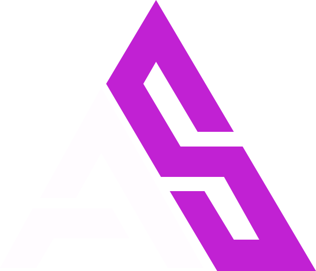
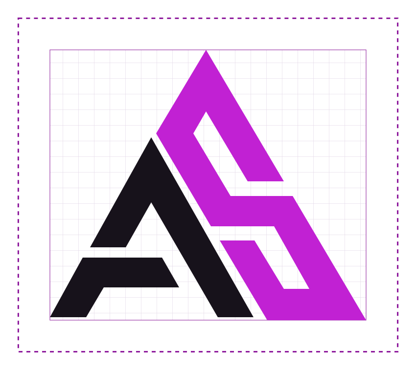
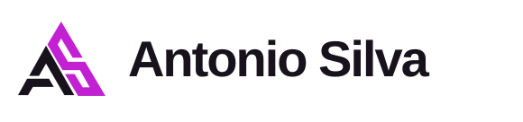
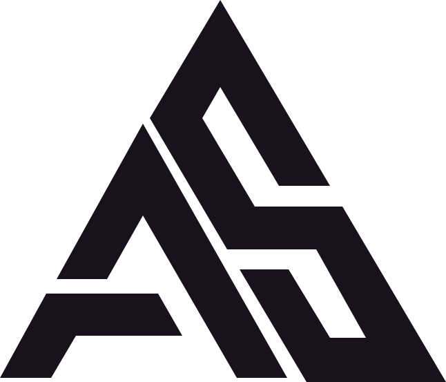
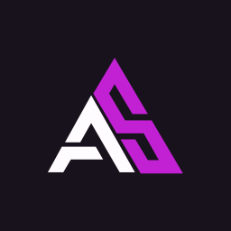

ANTONIO SILVA IDENTIDADE VIGENTE 0.3.0
01 / 10 · NOVEMBRO 2026
Manual de
identidade visual
Sistema da marca institucional Antonio Silva. O monograma AS assina o estúdio e dá origem aos recortes, à composição e à linguagem de ícones.
ANTONIO SILVA IDENTIDADE VISUAL / 0.3.002 / 10
A marca institucional
Posicionamento institucional
Antonio Silva é a marca institucional para apresentar o trabalho do estúdio, seus projetos e suas ferramentas de software. A identidade combina títulos geométricos, planos angulares e espaço livre para dar hierarquia ao conteúdo.
Públicos de referência
Clientes em avaliação técnica, parceiros de projeto e pessoas desenvolvedoras que descobrem as ferramentas do estúdio. A mesma assinatura pode abrir uma proposta ou fechar um estudo de caso.
Arquitetura de marca
Antonio Silva
Marca-mãe identificada no workflow. Assina canais institucionais e pode endossar produtos quando houver decisão expressa.
TrinketOS e Mailer
TrinketOS tem identidade própria. Mailer fornece uma referência de desenho. Endosso ou herança visual nos demais projetos depende de decisão por projeto.
Três caminhos avaliados
| Caminho | Esforço | Efeito |
|---|
| Manter só os PNGs | Baixo | Preserva as peças existentes, com pouca orientação para novos canais. |
| Estender a identidade TrinketOS | Médio | Acelera a implantação e aproxima visualmente empresa e produto. |
| Sistematizar o AS | Médio | Preserva o reconhecimento e cria regras próprias de uso. Caminho adotado. |
A estrutura do README ajuda a organizar a documentação. A linguagem da marca institucional fica registrada separadamente nas aplicações e nas orientações de texto.
03 / 10
Monograma e assinatura

Contorno da arte e área mínima de proteção. A malha orienta a montagem.Geometria preservada
O vetor segue os três planos dos PNGs: o A aberto em dois elementos, o S contínuo e o eixo diagonal compartilhado. Os vértices foram regularizados no traçado.
Área livre
Reserve 1u em cada lado, sendo u = 10% da largura visível do AS. No arquivo mestre, o símbolo mede 646 × 553 unidades. Para montar a assinatura, mantenha o texto centralizado na altura óptica do símbolo.
Redução inicial
AS com largura visível ≥ 32 px ou 9 mm. Assinatura com largura de caixa ≥ 220 px ou 55 mm. Abaixo desses limites, use uma superfície maior e confira a abertura entre os planos.

Positiva · tinta e sinal sobre fundo claroNegativa · papel e sinal sobre fundo escuro

Uma tinta · gravação ou impressão restrita
Branco · sobre fotografia escura uniformeEvite inclinar, esticar, fechar os vazios, separar A e S ou aplicar contorno, sombra e gradiente. Para fotografia irregular, coloque a assinatura sobre uma placa sólida com o respiro previsto.
ANTONIO SILVA IDENTIDADE VISUAL / 0.3.004 / 10
Cor e contraste
Tinta#17121B
Papel#FFFCFF
Sinal#C121D3
Ação clara#8C169B
Ação escura#F2A2FC
Névoa#F5EDF7
O violeta do Mailer calibra o S e os acentos gráficos. Use Ação clara e Ação escura para links, botões e foco. Os neutros ocupam a maior parte da composição.
| Função | Claro | Escuro |
|---|
background | #FFFCFF | #17121B |
foreground | #17121B | #FFFCFF |
card | #F5EDF7 | #251C2B |
card-foreground | #17121B 16.10:1 | #FFFCFF 16.11:1 |
popover | #FFFFFF | #251C2B |
popover-foreground | #17121B 18.44:1 | #FFFCFF 16.11:1 |
primary | #8C169B | #F2A2FC |
primary-foreground | #FFFFFF 7.77:1 | #17121B 9.97:1 |
secondary | #F5EDF7 | #251C2B |
secondary-foreground | #17121B 16.10:1 | #FFFCFF 16.11:1 |
muted | #F5EDF7 | #251C2B |
muted-foreground | #62566A 6.00:1 | #CDBED3 9.30:1 |
accent | #F6DAFA | #46274F |
accent-foreground | #8C169B 6.04:1 | #F2A2FC 6.82:1 |
destructive | #AA2445 | #FF9DB4 |
destructive-foreground | #FFFFFF 6.89:1 | #17121B 9.43:1 |
success | #196648 | #8EE2B6 |
success-foreground | #FFFFFF 6.92:1 | #17121B 12.03:1 |
border | #DDD0E0 | #49374F |
input | #86758E | #A991B0 |
ring | #8C169B | #F2A2FC |
ANTONIO SILVA IDENTIDADE VISUAL / 0.3.005 / 10
Tipografia e composição
Space Grotesk · títulos e assinatura
Software em prática
500 para etiquetas e 700 para títulos. Em títulos acima de 40 px, espaçamento entre letras de −0,04 em.
IBM Plex Sans · leitura e interface
Conexão, revisão e execução.
400 para leitura, 500 para apoio e 600 para rótulos. A segunda família assume a maior parte do texto e libera a Space Grotesk para a assinatura e a hierarquia.
| Uso | Tamanho / entrelinha | Família |
|---|
| Capa | 64 / 64 px | Space Grotesk 700 |
| Título de seção | 40 / 44 px | Space Grotesk 700 |
| Subtítulo | 24 / 30 px | Space Grotesk 700 |
| Corpo | 16 / 24 px | IBM Plex Sans 400 |
| Nota ou etiqueta | 13 / 18 px | IBM Plex Sans 500–600 |
Grid
Base de 4 px. Desktop com 12 colunas, margem de 48 px e calha de 24 px. No celular, 4 colunas, margem de 20 px e calha de 12 px. Limite textos longos a cerca de 65 caracteres por linha.
Fotografia e recortes
Priorize fotos de trabalho, pessoas e detalhes de processo. Recortes diagonais próximos a 60° podem ocupar a borda da peça. Reserve um plano contínuo para texto, legendas e assinatura.
06 / 10
Ícones e interface
O SVG do Mailer usa dois polígonos, um sólido e outro a 60% de opacidade. A família traduz esse contraste em duas ou três massas com cortes angulares e vazios legíveis.
Construção
Prancheta 24 × 24, margens ópticas de 2 px e separação de cerca de 2 px. Use vértices retos, sem contorno, com um plano principal sólido. Teste a 24 e a 32 px. Em tamanhos menores ou fundos complexos, use planos sólidos e revalide o contraste efetivo.
Uso
Catálogo SVG da empresa
Ícone junto de texto pode ser decorativo. Se for o único conteúdo de um controle, forneça um nome acessível. Um estado precisa de texto ou forma, além de cor.
Controles e estados
Botões com 44 px de altura recomendada. Primário preenchido, secundário com contorno e terciário em texto. Hover e pressão alteram a superfície. Indisponível usa o estado nativo e preserva legibilidade.
Campos mantêm rótulo visível. Erros usam mensagem próxima ao campo. O foco visível usa anel de 2 px com distância de 2 px da borda.
Ver projetoMovimento
120 ms para resposta de controle, 180 ms para pequenas transições e 240 ms para painéis. Anime opacidade ou deslocamento curto. Com redução de movimento, elimine deslocamentos e mantenha a mudança de estado imediata.
07 / 10
Aplicações da marca
Projetos selecionados
Portfólio · 1200 × 630
Proposta de desenvolvimento
Capa A4 · título, cliente e data

Organização no GitHub
Avatar quadrado com respiro circular
Do projeto à operação
Post · 1080 × 1350
Canais digitais
Site e portfólio usam a assinatura no cabeçalho ou rodapé. O avatar usa só o AS. Para posts, inicie com margem de 96 px e uma ideia por peça. Em apresentação 16:9, concentre a assinatura na abertura e no fechamento.
Impressos e e-mail
Propostas A4 têm margem inicial de 20 mm. Em cartões, mantenha texto e logo a pelo menos 5 mm do corte. Assinatura de e-mail com nome e contato em texto selecionável e símbolo acompanhado de descrição quando informar a marca.
Texto e localização
Nos canais institucionais, use verbos concretos e especifique o que foi feito. Exemplo de chamada: “Veja como o painel organiza os chamados”. Adote pt-BR na origem, preserve nomes de produto e revise acentos, quebras e comprimento quando traduzir.
08 / 10
Voz e expressão
Lema institucional em avaliação
Software para o trabalho real
O lema liga a empresa ao uso diário do software. Em uma capa institucional, acompanhe a frase de um exemplo concreto do que o estúdio entrega. Em propostas, deixe o título identificar o projeto. Em telas, use a ação ou o estado que a pessoa precisa entender.
Como a marca fala
Direta. Diga primeiro o que aconteceu ou o que pode ser feito. Use o nome da tarefa que aparece na interface.
Técnica na medida. Inclua o detalhe que muda uma decisão. Mostre a sequência, a condição ou o resultado quando isso ajudar a entender a entrega.
Responsável. Distinga entrega, teste e previsão. Dê prazo somente quando houver compromisso. Quando houver incerteza, diga o que será verificado.
Como a marca se expressa
Use “eu” quando Antonio assinar uma experiência pessoal. Use “nós” quando a empresa assumir uma entrega. Em instruções, fale diretamente com quem vai agir.
Em peças visuais, organize a leitura em título, evidência e próxima ação. Use recortes de telas, diagramas ou fotos de trabalho com legendas que expliquem o que observar. Use o AS como assinatura e os ícones como apoio à leitura.
Em suporte e erro, mantenha o tom calmo e retire o lema da mensagem. Em uma entrega, celebre o avanço dizendo o que a pessoa já pode fazer.
Comunicação por canal
| Canal | Ordem da mensagem | Exemplo |
|---|
| Portfólio | Problema → intervenção → evidência | Os pedidos chegavam por três canais. O painel reúne os pedidos em uma fila por status. |
| Proposta | Entrega → validação → limite | Entregaremos o fluxo de cadastro em ambiente de teste. A etapa termina após a validação dos campos e das mensagens de erro. |
| Produto | Estado → ação possível | O envio falhou. Confira a conexão e tente novamente. |
| Suporte | Impacto → verificação → retorno | Seu envio ainda não foi concluído. Vamos verificar o registro e atualizar você neste chamado. |
| Redes sociais | Decisão → demonstração | Juntamos duas etapas do cadastro. No vídeo, você vê onde revisar os dados antes de enviar. |
O README segue o padrão técnico do workflow. Produtos com marca própria usam a voz definida em seu manual.
ANTONIO SILVA IDENTIDADE VISUAL / 0.3.009 / 10
Pesquisa de referência
O recorte reúne estúdios de produto e empresas de engenharia de software que precisam mostrar como trabalham e o que entregam. Sistemas de design entram na comparação para orientar a biblioteca de ícones.
Comunicação de mercado
| Referência | O que foi observado | Aplicação na Antonio Silva |
|---|
| thoughtbot | Estúdio internacional que apresenta MVPs e projetos de produto com desafios concretos. | Estruturar casos pelo problema, pela decisão e pela evidência de entrega. |
| CI&T | Caso de engenharia para uma instituição brasileira que liga a intervenção a resultados medidos. | Publicar métricas quando houver período, comparação e fonte verificável. |
| Thoughtworks | O Technology Radar separa tecnologias em categorias de avaliação e adoção. | Nomear o estágio real do trabalho em propostas, portfólio e atualizações. |
Sistemas e fontes
O Lucide serve de referência para malha e consistência óptica. O Phosphor oferece um parâmetro de comparação para duotone e consumo em React. O Carbon orienta a organização de fontes e metadados.
A Space Grotesk foi indicada por Antonio Silva. A IBM Plex Sans foi escolhida para textos e interfaces. O monograma AS e a lógica de dois planos do Mailer são as referências visuais próprias. O TrinketOS orientou a estrutura da documentação.
As referências de mercado desta página foram pesquisadas para a revisão. Comparativo detalhado e fontes
ANTONIO SILVA IDENTIDADE VISUAL / 0.3.010 / 10
Fontes e governança
Insumos confirmados
Fornecido. Três PNGs do monograma AS, incluindo duas variantes transparentes e uma em fundo branco. Space Grotesk indicada pelo proprietário.
Observado. SVG do Mailer com dois planos em #C121D3. Manual local e Lens do TrinketOS documentam identidade e sistema de produto. A organização do GitHub estabelece o contexto de portfólio.
Adotado. Traçado AS, assinatura, pares de cor, IBM Plex Sans, escala, ícones e aplicações deste manual.
Controle de versão
0.3.0 · vigente
Responsável e aprovador: Antonio Silva. Alterações no AS, na assinatura, nas cores ou nas famílias tipográficas pedem revisão das peças e dos tokens.
Identidade adotada por Antonio Silva em 9 de novembro de 2026. Endossos específicos e provas de produção são avaliados por aplicação.
Arquivos e direitos
Os originais fornecidos e os derivados de marca estão destinados à revisão do proprietário. As fontes estão sob SIL Open Font License. Os SVGs da assinatura mantêm texto editável. Para distribuição em ambientes sem as fontes, converta o texto em curvas numa cópia de saída.
Razões calculadas em sRGB para os pares opacos. Texto comum ≥ 4,5:1, texto grande ≥ 3:1 e limites essenciais de controles ≥ 3:1. Em foto e transparência, teste a combinação final. Para impressão, converta com o perfil da gráfica e aprove uma prova física. WCAG 2.2
Verificação de aplicação
Confira o fundo e a variante do logo, o respiro, a leitura no tamanho final, o foco por teclado, as legendas e o contraste sobre a superfície real. Exporte o SVG para o digital e valide uma prova de cor quando houver impressão.
Referências
Organização Antonio-B-Silva · Mailer · Lens · Space Grotesk · IBM Plex
Referências locais: padrão de marca do workflow, modelo de manual e manual importado de TrinketOS. Pesquisa de referência realizada em 9 de novembro de 2026.